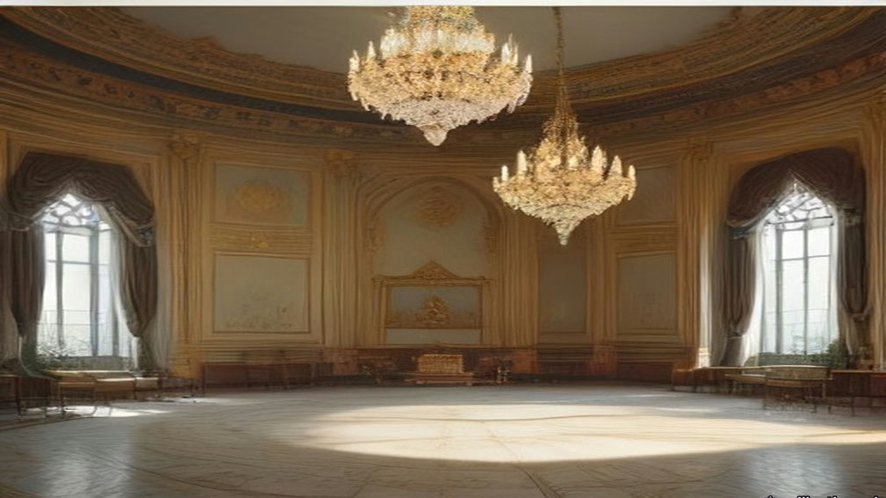
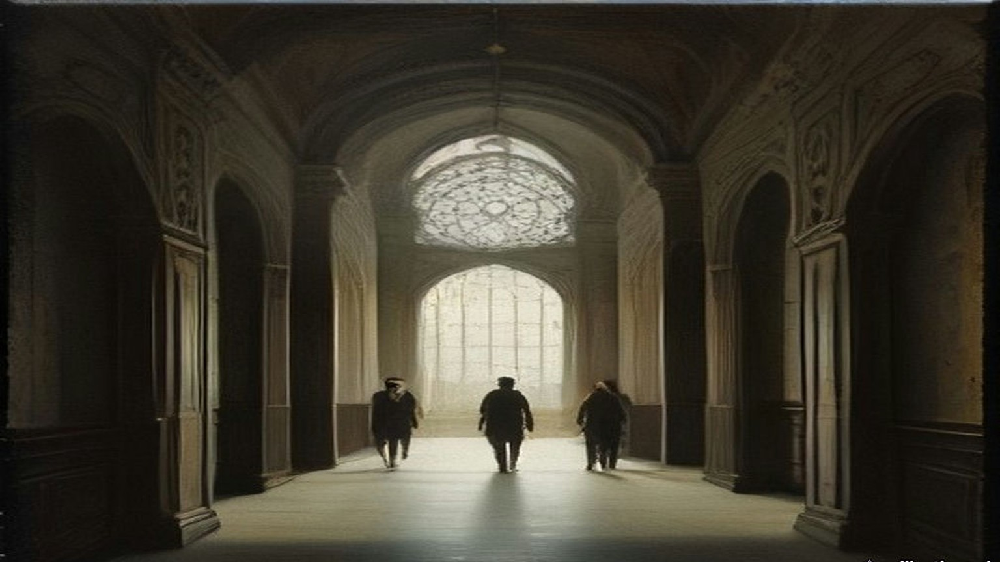
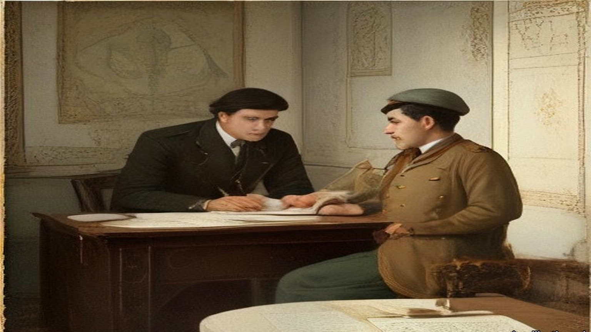
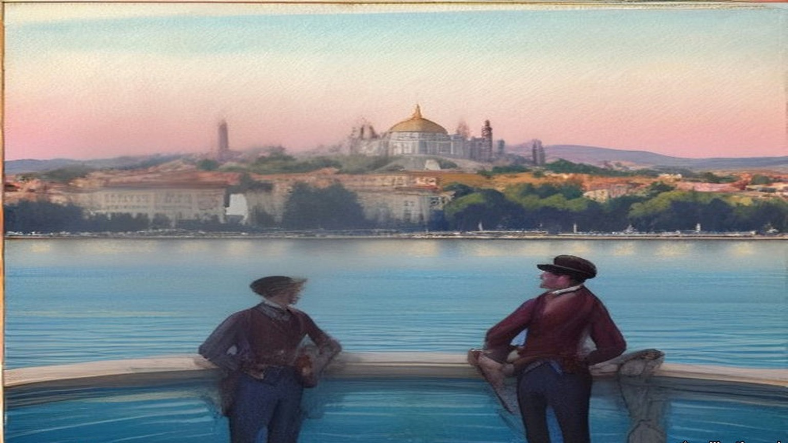
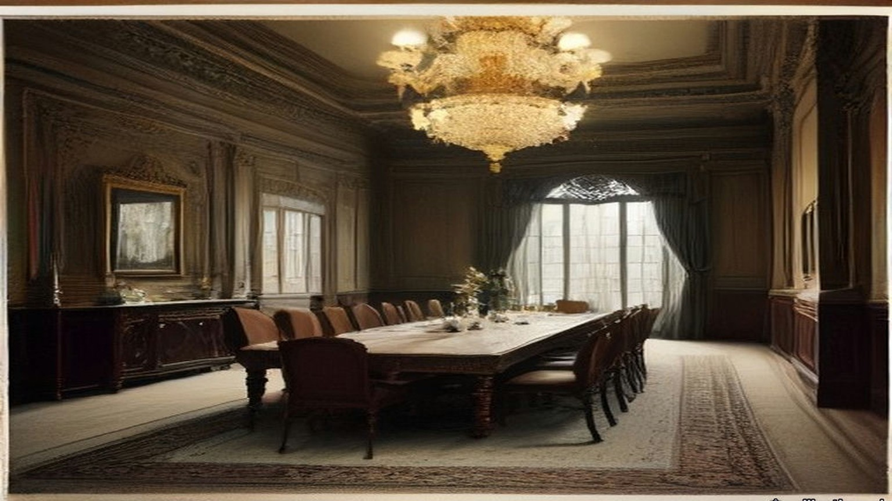
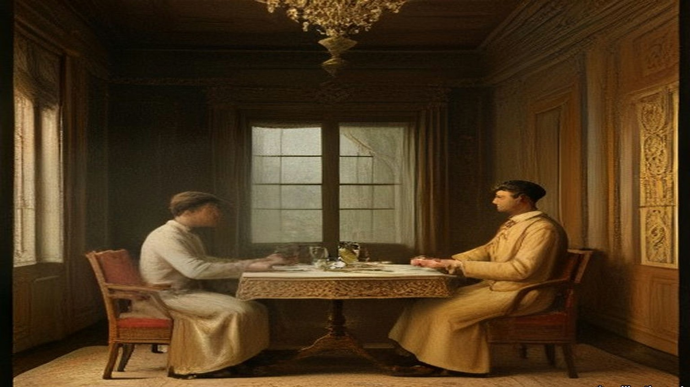

Chapter 23
Gaslight at Dolmabahçe, 1855–1873
Constantinople, Garvagh and Cavan, Jabal Nablus and the Marj Ibn ʿĀmir, 1855 to 1873
Marseilles to Therapia, September 1855
Edmund Hornby was in Bridport, recovering from a touch of the old fever, when the Foreign Secretary summoned him up to town. There was a loan of five millions which France and England had granted to the Turks to carry on the war in the Crimea, and someone had to go out to Constantinople and manage it. He accepted. Then he waited on the Foreign Secretary for his instructions and was told, blandly, that there were none to give, and was sent on to the Chancellor of the Exchequer.
Sir George Cornewall Lewis had none either. He told Hornby that the money was lying in the Bank of England, that it was to go out to Turkey as it was wanted and by the cheapest means, that the accounts were to be kept accurately, and, above all, that he was "to see that it went to the troops and was not spent on palaces, harems, and bacsheesh."
"Thus fully accoutred," Hornby wrote seventy years later, "I sallied forth like a knight of finance."
The appointment was dated 30 August 1855. His wife came with him; the baby stayed behind with its grandmother. At Paris Lord Cowley told him that his French colleague had already started. At Marseilles they went aboard a Messageries steamer carrying some three hundred French troops to the war, and every evening on the passage his wife sang to them, the rank and file included, any number of French songs, and every evening she wound up with "Partant pour la Syrie."
At Constantinople he went straight to report to the Ambassador. Lord Stratford de Redcliffe received him at the summer embassy at Therapia, up the Bosphorus, in his study, in a grey dressing gown. He did not offer to shake hands. Hornby had hardly finished his bow before the old man let fly at the Government for not appointing the man he had nominated himself, a Greek, a competent financier, a man who had his confidence. He abused the Foreign Office to his heart's content. He wished them joy of their nominee.
Hornby was thunderstruck. He kept a civil tongue in his head and let the old man finish without a word, his face hot, his hands still at his sides. Stratford turned for his dressing room. Hornby said, placidly, "Good morning, my Lord," and added that since it was his Lordship's intention not to assist him, it was his own intention to telegraph to the Foreign Office begging to be relieved, and he left the room without another word. On the stairs a lady he had never seen put out her hand. "Mr. Hornby, I think," said Lady Stratford. She was afraid her husband had not been quite himself that morning. She hoped he would not take to heart anything that had been said, as, with this terrible war going on, "he is sadly harassed and overworked." There was a worn, anxious look in her eyes, and Hornby found he could not vent his anger on her.
He dined at the Embassy that evening. Lord Napier was at the table, and Alison, the Oriental Secretary, and Count Pisani, the Chancelier, and Colonel Mansfield, and Lord and Lady George Paget. Before them all the Ambassador turned to the new commissioner and said he was afraid, "nay indeed I am certain," that he had been "most unjustly rude" to him that morning.
"Will you accept an old man's apology who has much to trouble him?"

When Stratford took him to be presented to the Sultan and the Ministers, he gave him a lesson in the Porte on the way. Keep your temper; insist on being treated as an equal, even by the Grand Vizier. Easterns never granted anything without demur. Listen to excuses; never give in to them. "Ask him for a million, and he will readily promise it; ask him for £100 which he can easily find, and he will spend months, if you let him, in proving to you that he cannot get it." He was not to assume that men like Reşid, Âli or Fuad Pashas were trying to cheat him. He was to assume that everyone below their stamp was trying to cheat him, and was actually doing so.
Old Reşid Pasha gave Hornby the other side of it one day. The Ambassador was often overbearing, he said, "but we know he is a true friend to Turkey and has more pluck in his little finger than the whole Divan put together."
* * *
Therapia and Orta-kioy, November and December 1855
Emilia Hornby wrote her letters home at the window. From Therapia in November she could see the ships moving up between the dark green shores and the sky tinted rose, and she could see very little of her husband.
He came back from the Porte grey in the face. He sat, he told her, day after day on a divan, smoking an immense chibouque, while the Ministers dragged out a few words of business in a dreamy kind of way at intervals of about half an hour. After weeks of it he and his French colleague felt that they had gained nothing and had only been finessed with. "What must not Lord Stratford have borne in all the years he has been here!" she wrote on 10 November.
The Commission was resolved to be firm, she wrote, "and to do their best to prevent the money of the loan being spent on diamond necklaces or new slaves." It was said in Therapia that before the gold had even arrived, "certain members of the Turkish ministry had obtained advances from their Saraffs at high interest, in anticipation of their share of the plunder." "A Greek banker, supposed to be one of the lenders, himself told us so, besides one or two other persons."
The Sultan was deeply in debt, even at the bazaars, for the dress and jewels of his women, "yet he still persists in spending vast sums in building new palaces and making presents." At the Porte Edmund heard that Omar Pasha had written to the Seraskier complaining that his troops had received no pay for months. Inquiry found that a large sum had been sent, that Omar had never received it, and that the receipt in his handwriting was forged. No inquiry was made into who had forged it.
By December the Hornbys were in a cottage at Orta-kioy, on the European shore. A merchant told her that twenty years before there had been home manufactures the people wore, and that they had gone, because when a Pasha found a manufactory flourishing in his district he taxed and robbed its owner until he fled or starved. The village Cadi fixed the price of bread and meat; the bakers and butchers paid him so many piastres a week to keep the price above what it should be. "The 'Government' have pretty well succeeded in killing the goose for its golden eggs," she wrote on 3 December. Then she set two buildings side by side for a reader in England. The condition of the people, "and that of the Pashas, is perfectly illustrated by the beautiful white marble palace and a more wretched hovel than Ireland ever produced."
The Sultan's new palace was going up in white marble on the shore at Dolma Batche, below the hill of Pera.
* * *
The Treasury, Stamboul, 1855 to 1857
The loan came out in sovereigns. Hornby and his French colleague, M. de Cadrossi, Inspector-General of Finance, kept the cash deposit in bags at the Turkish Treasury, and from time to time they went to inspect and verify it.
On one of those days they cut open a bag that ought to have held £20,000 in gold. It was full of copper coins.
Cadrossi went purple. He went for old Kiani, one of the Ministers, as if to strangle him, and Hornby had to pull him off. They never found the thief. Hornby was certain it was not Kiani; with the Ministers, he wrote, he got on well enough, "especially Fuad, Ali, old Mehemet, and Kiani."
Another time scurvy broke out among the Turkish troops, at Eupatoria, he thought, and the commissioners bought fresh vegetables, filled two large ships and sent them off. Two or three weeks later, at the table d'hôte, Hornby overheard French officers congratulating each other that their regiments had been saved from scurvy by the lucky arrival of two Turkish transports full of vegetables, which their commissariat had bought from the Pasha in command. The Turkish officers had bagged the cash. Hornby went up himself, brought half a dozen of them back to Constantinople, and had them cashiered. Whether they were made to disgorge, he never learned.

When the five millions were spent the two commissioners went to wind up their accounts with their banker, an Armenian named Theodore Batazzi. He wished them good morning and handed each of them an envelope. Hornby opened his before Cadrossi could open his own. Inside was a cheque for £1,250. He closed it, held out his hand for Cadrossi's envelope, and gave both back. They were salaried servants of their Governments, he told Batazzi in English. Batazzi said it was their lawful due, that they had brought him the business, that a commission was customary all over the world, and that if they refused they were making him a present.
All they had needed to do, Hornby wrote, was to shut their eyes a little to what the real owners of the money wanted done with it. He reckoned the loss to the loan at the end. "I do not believe that more than half a million was misapplied."
* * *
Palais d'Angleterre, Pera, January and February 1856
A year before, on 26 January 1855, the Earl of Clarendon had sent Stratford an instruction about Syria. Consul-General Moore, in Syria, had written of the advantage that would come from developing the agricultural resources of the province. It was not for London to say whether the first step should be to let Christians acquire landed property or to hold out inducements to foreign capitalists to invest their money there. But it was unquestionable, Clarendon wrote, that if the Turkish Government "could be induced to modify its laws in regard to the tenour of landed property," the strength and resources of the Empire would be very decidedly improved. "Your Excellency will press these considerations upon the Porte on all suitable occasions."
By January 1856 Sevastopol had fallen, the powers were going to Paris to make the peace, and the Porte was drafting the reforms it would lay before them. Stratford sat at his desk in the embassy at Pera with information from what he called a sure, though private, source. The Ottoman Ministers had been startled by their colleagues in the Council. They were hesitating. The points from which they were most inclined to recede were three: religious persecution, equal admissibility to office, "and the possession of landed property by foreigners."
It was no longer a time, he wrote to Clarendon, for recurring to arguments already exhausted. He wrote instead to his dragoman, in French, on 25 January, and told Pisani to read the papers to the Grand Vizier and then put them in the hands of Fuad Pasha. One sentence was about himself. He had heard it said that he attached less importance than his French and Austrian colleagues to letting foreigners own land in Turkey. The supposition was entirely mistaken. He was convinced, on the contrary, that the cordial drawing together of Turkey and Europe was essential to the Ottoman Empire, "et que la mesure la plus efficace dans ce sens ne serait autre que la faculté accordée aux étrangers d'y posséder des immeubles de toute espèce": that the most effective measure to that end would be nothing other than the power granted to foreigners to own real property of every kind.
On 13 February Clarendon wrote back approving. As to the privilege of holding land, Her Majesty's Government considered it "of vast importance to Turkey, as there is reason to believe that a large amount of capital is ready for investment in land, upon proper guarantees as to tenure, whenever peace is restored."
The Sultan's charter of reform came out that February. Stratford's biographer, Stanley Lane-Poole, who had his papers, wrote that his hand was traceable in every line. Its fifteenth point, as an English visitor summarised it the next year, said that all foreigners could possess landed property, obeying the laws and paying the taxes, and that arrangements would be made for this with the foreign powers. Its sixteenth said that the abuses in the exaction of taxes, "particularly of the tithes, shall be reformed," and that direct payment into the exchequer would be put in place of the system of farms. Its seventeenth said that while the farms existed they would be let publicly to the highest bidder.
Stratford wrote that its acceptance was "little short of a miracle."
* * *
Prinkipo and Dolma Batche, July 1856
The Sultan gave his dinner for the allies at the new palace in July. Emilia Hornby was on the island of Prinkipo, and at about seven o'clock she sat at her window alone and watched a thunderstorm come down over Constantinople out of the Black Sea, the lightning zigzagging over the water and the rain one dense purple mass from sky to earth. She thought of the guests on the water. The principal guest, the English commander-in-chief, Sir William Codrington, could not land at all, she heard; he battled with the storm, dropped anchor almost within sight of the palace, and was seen for a moment from the shore with his staff in full dress.
Edmund got there. He rowed to the white marble steps and gate of Dolma Batche with Lord Stratford and the staff, in the state caique, and came back and told her all of it.
Fuad Pasha and Âli Pasha, now Grand Vizier, received them and led them through a white marble hall to a plain room with plain white columns, where the Sultan sat on a divan in his usual military frockcoat and fez. His collar, cuffs and sword were covered with brilliants, and he looked shy and uncomfortable, as he generally did before strangers. Stratford presented the English and M. de Thouvenel the French, and Count Stefano Pisani translated the courtly speeches about alliances in the most courtly manner. Then the Sultan withdrew, because it was not etiquette for him to dine with anyone.
The great hall had a dome of glass. In the middle of it hung a chandelier of great size that had cost, her letter said, an immense sum of money, and that the Sultan was very proud of. "It burns four hundred jets of gas." About two hundred wax candles lit the flowers and the gold and silver plate on the table. The walls were lined with soldiers in the dress of the old Sultan's Guard, plumes and all, slouching. The dinner was French dishes and Turkish ones by turns, pilaf among them, cold and ill-served by European waiters who did not know their work, and "the pashas did eat of every thing."
Edmund, by his own account, sat between the two commanders of the war, Pélissier of France, short and fat and one blaze of gold and orders, and Codrington in a scarlet coatee without a single ribbon, looking like an English country gentleman. A minute or two after the Sultan had gone there were two frightful claps of thunder, then wind and hail. The whole building seemed to shake. The gas went out, and the hall under the glass dome was dark. The band at the end of the hall dropped its instruments with a clash and fled. In his wife's telling the musicians left a large door open behind them, and the draught blew out half the candles.

For some moments nobody spoke. Then a thin, shrill voice in French, the Belgian Minister's, said it wanted only the handwriting on the wall and the words "Mene, Mene, Tekel, Upharsin" to make it a second feast of Belshazzar.
Foreign orderlies and the Grand Vizier routed out palace servants who came running with all the candelabra they could find, and the guests went on with their wine. Lightning had struck the palace gasworks, which, Hornby wrote, "Turkish fashion, were planted on the highest piece of ground in the gardens." His wife wrote that the dessert "was demolished almost in the dark by Turk and Christian," and that the Christians at that table were "the first whom the world ever saw assembled in the palace of a Sultan."
Her letter of 23 July began with something else. Edmund had received the Order of the Medjidie, a silver star with a green and crimson ribbon, the patent in a white satin bag with a silver tassel. "It is a great pleasure to know that the Sultan is satisfied with the course which the Commissioners have pursued with regard to the English Loan."
* * *
Stenia, on the Bosphorus, 6 October 1857
Nassau William Senior, the economist, came out in the autumn of 1857 and kept a journal of every conversation he could get. On the fifth of October the Embassy's despatch boat lay all morning with steam up, waiting on a warrant from the Sultan to let British troops cross Egypt for India. The Sultan, Senior heard, had been drunk when it reached him.
On the sixth Senior went by water with Mr. Sarell, the second dragoman, to dine with Reşid Pasha at his palace between Stenia and Rumeli Hisar. The house was a long range of buildings two stories high rising from the water, with fifteen acres of garden running up the hill and a kiosk at the top. Reşid was a short man, about sixty, with mild, kind manners. They walked an hour in his gardens with him and smoked half an hour while he dressed.
Ten sat down at sunset. On Reşid's right was Abdallah Pasha, "the son and the probable successor of the Sheriffe of Mecca," a handsome grave man of about thirty. Senior asked why, being a sharif, he did not wear the green turban. "I wear it sometimes," Abdallah said, "but our pedigree is too well known to need a badge." Reşid whispered to him, asking leave to give the Englishmen wine, and Senior and Sarell and the physician drank a bottle of good Bordeaux that nobody else touched.

The moon was full when they rose to go. Reşid offered his caique, or horses. If they walked by the shore villages, he said, the dogs would have them in the unlighted lanes, and nobody crossed the hills at night except in a strong party, armed. They walked over the hills in an hour and a half and met no one.
Senior had been asking everyone about land. A European resident he called A. B. told him that foreigners were not allowed to buy,. "The Hatt-i-Humáyoon," Senior said, "declares that foreigners may purchase land and houses." "Yes," A. B. said, "but with this reserve, that the details are to be arranged between the Sultan and the foreign governments." That meant giving up the capitulations, the consular courts. He would not pay that price for land if nothing else were asked. Senior said he saw Englishmen holding land: Mr. Hanson had a property at Candilli. Such transactions, A. B. said, were fraudulent and illegal. Mr. Hanson's agent, keeping his name carefully out of sight, had bought it in the name of his wife, describing her by her Christian name of Marian, "a Christian rajah."
Another man, C. D., told him in his garden on 28 October what a strong sultan would have to do. Fund the floating debt. Restore the currency. Put an end "to the madness of palace-building," and put direct collection of the revenue in place of the farms. "I have no doubt that the revenue, if honestly and directly collected, could be doubled."
* * *
Orta-kioy, January and February 1858
That winter the snow came down off the Black Sea for six weeks. Emilia Hornby lay awake in a thin wooden house on top of the hill at Orta-kioy, waiting for the windows to blow in. Snow drifted onto her table in the middle of the room, and water stood in solid ice in every room of the house. Part of the Golden Horn froze over and many hundreds of people crossed it on foot. Wolves and foxes came down from the mountains; their tracks were in the vineyard by the house, and a charcoal burner from a village nearby was killed by the wolves.
After three days of storm the front of the kiosk was walled up in a drift, and the drawing room went dark at noon. The men cut their way out through the street door. White bread came only from Bebek, and she put everyone on rations. In the autumn, she wrote, the authorities had ordered the boatloads of firewood coming in to sell at a fixed price, filling their own stores at that price; the traders lost by it and brought no more, and by the storm she was burning packing cases. That night the sheep of many villages froze to death, and hundreds of oxen.
"The death of Redshid Pasha has caused much real regret here," she wrote to Mrs. Austin on 5 February. "His friends strongly suspect that bronchitis had but little to do with it; but no inquiries were made, and he was buried before we, living in front of his house, had heard of his death."

Stratford was gone by then. He had left Constantinople at the turn of the year, meaning to come back, and the news overtook him at Calais. "Alas! poor Reshid!" he wrote to Alison on 14 January. He had left him, to all appearance, well. "The Sultan has lost his best man." On 20 February Palmerston's government fell, and Stratford, out of regard for Palmerston, sent in his resignation rather than serve under Lord Derby. On 28 February the new Foreign Secretary, Lord Malmesbury, wrote that he had sent it to the Queen: "I don't know how to replace you." By 3 March her acceptance was known. "The curtain has at last dropped on my Eastern drama," he wrote to Alison on 4 March.
He was in England when the Land Law was promulgated in Constantinople, on 7 Ramazan 1274, which was 21 April 1858.
* * *
Constantinople, 21 April 1858 to 28 December 1871
The Land Law begins by dividing the soil of the Empire into five. Land held in full property. Land of the state, arazi-i mîrîye, the Crown lands, belonging to the treasury. Land in mortmain. Land left for public use. Dead land. The village ploughland of Palestine, Conder was told in the 1870s, was of the second kind.
Article 3 says what the deed is. A title-deed "with the Tughra at the top is given to the owner." The tapu is the payment made in exchange for the right to possess, "and is collected by the official for the Government."
Article 8: "The whole of the lands of a town or village cannot be granted en bloc to the whole of the inhabitants nor by choice to one, two, or three of them. Different pieces of land are given to each inhabitant, and title-deeds (Tapu sened) showing their possession are delivered to them."
Article 9: the land is not to be left fallow without a valid excuse. Article 20: ten years' possession without dispute stands for a deed. Article 115: "The creditor cannot seize the land owned by a debtor in exchange for his debt," nor force the debtor to sell it.
The Tapu Law that followed in January 1859 fixed the deed's form. It was to be printed, with the Tughra, and to state "the Kaza and village in which the land is situate, and its boundaries and number of donums." Instructions of 15 Shaban 1276 set out the columns of the registers and the fees, and ordered the counterfoils sent to the Imperial Defter Khane in the capital.
The Law on the Registration of Census and of Properties, of 14 Jemazi ul evel 1277, the end of November 1860, gave a province twenty-two registrars under a chief, and paid assessors, to write down people and property together. In each village they reached, an assessing committee of not more than six persons was to be formed "from among the notables and trustworthy inhabitants" of that and the neighbouring villages, and the paid assessors were to sit with it while it valued every property and entered the value in the rough list.
In the late summer of 1862 an imperial irade on debtors left a man his cheapest house and enough of his Crown land to keep it, and sold the rest at auction. Crown land could not be sold for debt under the Land Law, it said, but that exemption did not apply against the Government Treasury. Sums due to the Treasury could be collected from the land.
In the autumn of 1867, eleven years after Stratford's note to Pisani and nine after he left, came the law on the Acquisition of Property by Foreigners. "The subjects of foreign Governments are allowed to take advantage of the rights to possess property within or without towns in every part of the Imperial Dominions, with the exception of the Hejaz, in the same way as Ottoman subjects," on condition that they obeyed Ottoman law, paid Ottoman taxes and went to Ottoman courts in all matters of their property.
Then came a law on the sale of immovable property for debt, which the Code's English translators print with the date 15 Sheval 1288, the end of December 1871, and which set aside Article 115. Crown land "can be sold like movables for a judgment debt without the consent of the debtor." One house appropriate to his station would be left him. If he was a farmer, enough land to keep the house would be left him too, unless he had mortgaged it. The creditor sent a notice; after thirty-one days he could ask for the land to be seized. The seizure paper was to give the kaza and the village, the approximate number of donums, and the number and kind of the trees.
* * *
House of Lords, 14 June 1869
Lord Stratford de Redcliffe was eighty-two and had been out of the Embassy for eleven years when he rose in the Lords on the second reading of the Irish Church Bill. He spoke of the English Government's long efforts to raise the condition of the Irish provinces and called the policy "so changeable, so ill-directed, and sometimes so violent in its prosecution" that little good came of looking back at it. "To the ignorance in which we have been kept on the very important question of land tenure," he said, "may be traced those mischiefs which are not only apprehended, but which in part have actually arisen."
His family were Irish landlords on one side. George Canning, of a Wiltshire and Bristol family, had the manor of Garvagh in County Londonderry, and a lease of the Ironmongers' Company's estate of Agivey; the Cannings of Garvagh were attainted under James II and restored. A Stratford Canning of Garvagh married Letitia Newburgh, heiress of Ballyhaise in County Cavan, in 1734. That Stratford's son, the Ambassador's father, was disinherited, married Mehitabel Patrick, daughter of a Dublin merchant, and went to London to be a merchant and banker. Garvagh went down another line of the family. In 1869 the head of it was the second Baron Garvagh.
Fourteen years later John Bateman printed the estate in his Great Landowners of Great Britain and Ireland: 8,427 acres in County Londonderry at a valuation of £4,459 a year; 5,803 acres in Cavan at £2,804; 1,176 acres in Down at £1,462. In all, 15,406 acres and £8,725. "CHARLOTTE, Dow. LADY G., owns most of this property."
* * *
Jeb'a and Sânûr, Jabal Nablus, August 1872
Lieutenant Claude Conder of the Royal Engineers had just taken command of the Survey of Western Palestine. On 16 August 1872 the camp moved north from Nablus to the village of Jeb'a, in the hills called the Eastern District of the Jarrar after the family of native chiefs who had once governed everything from the Great Plain to Nablus. The villages were large, the houses of good stone, the olives and corn very fine. East of Jeb'a, on its own hill, stood the fortified village of Sânûr, where the head of the Jarrar lived. His nephew was sheikh of Jeb'a.
The Jeb'a family asked the officers to dinner. About six in the evening a man came to fetch them, and they walked up through the village to the highest house. The men of Jeb'a were wonderfully fine men, Conder thought. In 1868, after a riot, the Government had come down on them, killed some thirty or forty, fined the village heavily and taken most of the young men for soldiers.
The sheikh came in a white robe and a yellow silk kufiyya bound with a black cord, slipped off his red slippers, and stepped onto the dais. He touched their hands and then his own breast, lips and head. Elders came in, and the sheikh's son, and each time the room rose and the greetings went round again. Then a low round table, a brass basin and ewer, towels, and a dozen dishes: lentils, stuffed marrows, tomatoes, bowls of leben, three wooden platters of rice piled in cones with meat in them, and a kid dressed whole, its head and legs on. Conder, with no Arabic yet, sat silent while Drake talked of London and the railways. The sheikh thought they were hunting for crosses cut on the ruins, so that they could claim the places afterwards.
Some days later they dined at Sânûr. The village had once held out for days against regular troops and given in only when the Pasha's guns came up. An old man remembered a cannonball coming into a room where cotton was stored and rolling the soft heap round itself. The host was an unwieldy man in a black cloak. The old sheikh, once governor of the district, spoke bitterly against the Turks. "They rob and impoverish me," he said. "Are my women to carry wood and fetch water? Are my sons to plough the ground?"
Earlier that month, near Nablus, a sheikh riding back with the survey party had been glad of the escort. He was carrying the taxes to Nablus. As they rode he asked Conder how soon the English were coming to take the country and "build it up again."
They left Jeb'a on Friday, 30 August, for Jenin and the plain.
* * *
Nazareth and the Great Plain, autumn 1872
That autumn the survey worked the Nazareth district and the northern edge of the Great Plain, Marj Ibn ʿĀmir, which the English called Esdraelon. After Sergeant Black was shot at near el-Harithiyeh, the Lieutenant-Governor of Nazareth, Faris Effendi, came down to the camp to make friends: a purple flannel shirt, a bright brown jacket, greenish trousers with broad black stripes, a cotton handkerchief under a shabby red fez, huge blue goggles. His salary, the Protestant clergyman Mr. Zeller told Conder, was a mere pittance he could not live on, and he had his ways of increasing his income. In that district Conder learned something about the plain itself.
"A Greek banker named Sursuk," he wrote, "to whom the Government was under obligations, was allowed to buy the northern half of the Great Plain and some of the Nazareth villages for the ridiculously small sum of £20,000 for an extent of seventy square miles." The taxes of the twenty villages came to £4,000 a year, "so that the average income could not be stated at less than £12,000, taking good and bad years together." Cultivation had improved under him. The property would be immensely valuable, Conder added, if the title could be thought secure. The peasants put the sale down to Russian intrigue.
He set down the rules of tenure as the country explained them to him. Crown land, glebe and freehold. "The taxes of the first two kinds are farmed to the highest bidder." The village lands belonged in reality to the Crown; they passed to all the sons equally; if left uncultivated they went back to the Crown; their limits were the valleys, the ridges and the boundary stones. The crop was assessed standing, before the reaping, and the men whose duty it was to assess it put it off to the last moment, so that the peasant often had to give half of it as a bribe to have it assessed at all. He wrote down three villages from his notes: one had 4,000 acres and paid £140, one 6,000 acres and paid £65, one 3,000 acres and paid £320. The peasantry, he wrote, "are eaten up by usury; their very clothes are bought with money borrowed at forty or fifty per cent."
* * *
Kurâwa, Jabal Nablus, 1873
Of the zayt, the oil, I speak first, because of it all the rest.
Bad, the olives that year. Small and few. My father said to me, ya ibni, some years the tree rests, and Allah gives again. Bal, the tax rests not. The tax, it is written in the daftar, الدفتر ad-daftar, in Nablus, and the daftar knows not the wind.
Came the Franks in that year to our hills with their tents and their brass things on three legs, and they asked the name of each valley and the names of the ruins. Said the old men, they look for the crosses on the old stones, to take the places after. I said nothing. Who am I to say.
The land of Kurâwa, it is of the sultan, al-mīrī, الميري. So my grandfather said and his grandfather. We plough it and we sow it and our sons after us, all the sons the same, and if a man leaves it and ploughs it not, it returns. Its borders, the valley on that side and the ridge on this side, and the stones that our fathers set them. There is a paper now in the town also, aṭ-ṭābū, الطابو, with the seal of the sultan at its head, and the afandī says each man should have his piece in it, written with its donums. Wallāh, I have not seen this paper with my eyes. The afandī has seen it.
The tax of the tenth, al-ʿushr, العشر, they sell it. A man of the town buys it from the government, al-multazim, الملتزم, and then it is his, the tenth of us. Came his men at the time of the harvest, and the soldiers with them, the bāshī-bazuq with their guns on their shoulders. They looked at the trees and they did not count. Thumma they went. Said they, after, after, we will come and count. And the olives on the tree and on the ground, and we could not take them in, because if the count is not made the olive is not yours to press, and every day the worm and the birds and the rain. Ya rabb. Came they at the last, when the olive was nearly black on the earth. And to have the count made at all, ibn ʿammī gave a share, and his neighbour gave a share, and what they wrote after, Allah knows it.

When the qāʾimmaqām came he slept in the guest-house of the village and we fed him and his horses and his men, and that was from us also.
When they counted all of it together, the oil of Kurâwa, all of it, was not as much as the tax.
My shirt that I stand in, I bought it with money from the man of Nablus, and for every ten that I took, at the year's end fourteen, fifteen. My brother's son they took him for the soldiers, he and four others, and put the irons on them going down the road to the sea, and the women went after them crying to the last olive tree and then stood. From the soldiers, who comes back? My grandfather's brother went with the nizam of Ibrāhīm Pasha, and he came not.
And so when the Frank officer came that year to our village and sat with the men, I was with them. And they told him. The olive crop so poor, they said to him, that all its price is not as much as the tax that they will take. And the men were weeping, ya akhī, grown men with beards, and he wrote it down in his book.
What use, the writing of a Frank. But he wrote it.
* * *
Haifa and the Plain of Esdraelon, the 1880s
Laurence Oliphant settled at Haifa and wrote letters about the country for the New York Sun. He rode across Marj Ibn ʿĀmir unarmed. Almost every acre of it was in the highest cultivation, he wrote; it looked like a huge green lake of wheat with the mounds of the villages rising out of it like islands. The Bedouin whose tents were left on the southern edge of it were "subject to inexorable landlords, who charge them exorbitantly for the land which they occupy, and for which they pay in hard cash, under penalty of instant ejection, which is ruthlessly enforced."
Nearly the whole plain, he wrote, was divided between two great proprietors. One was the Sultan, who had lately bought a great part of the eastern end. The other was "the Sursocks, the richest bankers in Syria, who are resident in Beyrout, and who own nearly all the villages extending from the foot of the Nazareth hills to the sea."
They drew "an annual income of about $200,000 a year" from the plain, he wrote in another letter, and "They own practically about five thousand human beings as well, who form the population of thirty villages." When he wanted the villagers to let him into a sealed tomb, he found "no more potent talisman" than the name of Sursuk. The peasants, he wrote, were in the hands of "the money-lenders who now make their profit by sucking their very life-blood."
Mr. Sursock told Oliphant himself that carrying the previous year's crop from the plain down to Haifa and Acre had cost him $50,000. He said it to show why the plain needed a railway. A concession for one had lately been granted to these Beirut capitalists, Oliphant wrote, from the Bay of Acre across the middle of Esdraelon to the Hauran, and as he wrote the engineers were starting out to survey the line.
Mini-glossary
- Dragoman (2 occurrences in this chapter): Official interpreter and diplomatic intermediary between European embassies or consulates and Ottoman or Arab authorities.
Important names
- Palmerston, Lord (Henry John Temple) (2 mentions in this chapter): British Foreign Secretary and Prime Minister who directed British policy in the First Opium War and the 1840 Levant crisis.
Sources
- Hornby, Sir Edmund. Sir Edmund Hornby: An Autobiography. London: Constable, 1929. Book II, ch. I, pp. 67–83: the summons; Cornewall Lewis's instructions and "knight of finance" (p. 67, with the footnote date 30 August 1855); the Messageries steamer and "Partant pour la Syrie" (pp. 67–68); the Therapia interview, Lady Stratford, the dinner and the apology (pp. 68–69); Reşid on Stratford and Stratford's advice (pp. 72–74); the Ministers, Kiani, the copper bag, the scurvy ships, "half a million" (pp. 76–77); Batazzi's cheque (p. 78); the peace banquet, the gas, the Belgian Minister (pp. 82–83). Internet Archive, in.ernet.dli.2015.206554.
- Hornby, Lady (Emilia Bithynia Hornby). In and Around Stamboul. Philadelphia: James Challen, 1858. Letter of 10 November 1855, Therapia, pp. 104–106; letter of 3 December 1855, Orta-kioy, pp. 141–143; letter of 23 July 1856, Prinkipo, pp. 402–406. Internet Archive, inaroundstamboul00hornrich.
- Hornby, Lady. Constantinople during the Crimean War. London: Richard Bentley, 1863. Letter to Mrs. Austin of 5 February 1858, Orta-kioy, pp. 496–500 (the winter; Reşid's death). Internet Archive, constantinopled00unkngoog.
- Foreign Office confidential print, FO 424 (Correspondence respecting Turkey, 1855–1856), as scanned locally: Clarendon to Stratford, 26 January 1855, no. 134; Stratford to Clarendon, no. 100, Constantinople, 28 January 1856, with inclosure, Stratford to Pisani, Palais d'Angleterre, 25 January 1856 (French); Clarendon to Stratford, no. 174, 13 February 1856. The French is quoted from the print and translated in the text.
- Lane-Poole, Stanley. The Life of the Right Honourable Stratford Canning, Viscount Stratford de Redcliffe. 2 vols. London: Longmans, 1888. Vol. i, pp. 3–5 (Garvagh; the disinheritance; Mehitabel Patrick); vol. ii, pp. 440–442 (the Hatt-ı Hümayun; "little short of a miracle"), pp. 446–448 (Reşid's death; resignation; letters to Alison of 14 January and 4 March 1858). Stratford's letters are quoted as Lane-Poole prints them.
- Senior, Nassau William. A Journal Kept in Turkey and Greece in the Autumn of 1857 and the Beginning of 1858. London: Longman, 1859. Pp. 22–24 (A. B. on land; "but with this reserve"; Hanson at Candilli), pp. 53–58 (5 and 6 October 1857; dinner with Reşid; Abdallah Pasha), pp. 147–148 (C. D., 28 October), and his summary of the Hatt-ı Hümayun, points 15–17.
- The Ottoman Land Code, translated by F. Ongley, revised by Horace E. Miller. London: William Clowes, 1892. Land Law of 7 Ramazan 1274, preface and Arts. 1, 3, 8, 9, 20, 115 and the note to Art. 115; Tapu Law of 8 Jemazi ul akhir 1275, Art. 14; Instructions regarding Tapu Seneds, 15 Shaban 1276; Law on the Registration of Census and of Properties, 14 Jemazi ul evel 1277, chs. 1–2; Law concerning the Sale of Land of Certain Debtors, Rebi ul evel 1279; Acquisition of Property by Foreigners, end of Jemazi ul evel 1284, Arts. 1–2; Law concerning the Sale of Immovable Property for Debt, 15 Sheval 1288, Arts. 1, 5–7. Internet Archive, ottomanlandcode00turkuoft. Hijri dates converted with the tabular Islamic calendar; the Code's own note gives 21 April 1858 for 7 Ramazan 1274.
- House of Lords Debates, 14 June 1869, vol. 196, Irish Church Bill, Second Reading, Viscount Stratford de Redcliffe, cc. 1695–1700. https://api.parliament.uk/historic-hansard/lords/1869/jun/14/second-reading-first-night
- Burke, Sir Bernard. A Genealogical and Heraldic Dictionary of the Peerage and Baronetage. 31st ed. London, 1869. "Garvagh" (the 2nd Baron; George Canning of Garvagh; Agivey; Letitia Newburgh of Ballyhaise).
- Bateman, John. The Great Landowners of Great Britain and Ireland. 4th ed. London, 1883, p. 181, "Garvagh, Lord."
- Conder, Claude Reignier. Tent Work in Palestine. 2 vols. London: Richard Bentley, 1878, vol. i, pp. 165–166 (Sursuk). Internet Archive, tentworkinpales00condgoog. And the new edition in one volume, London: Richard Bentley, 1887 (Project Gutenberg 46641): the preface (dates of the Survey); Jeb'a, Sânûr and the Jarrar, 16–30 August 1872; Nazareth and Faris Effendi; the chapter on the Fellahin (tenure, taxes, assessment, the three villages, Kurâwa in 1873, usury, conscription).
- Oliphant, Laurence. Haifa, or Life in Modern Palestine. 2nd ed. Edinburgh and London: Blackwood, 1887. Preface (letters to the New York Sun over three years); p. 42 (the Sursuk income and villages; checked against the page image); pp. 59–61 (the two proprietors; the Bedouin; Mr. Sursock's $50,000; the railway concession). Internet Archive, haifaorlifeinmod00olipuoft.